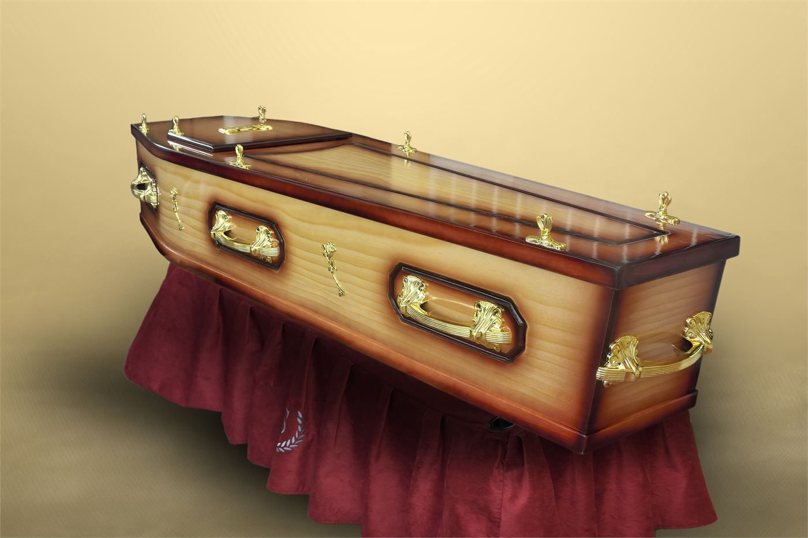
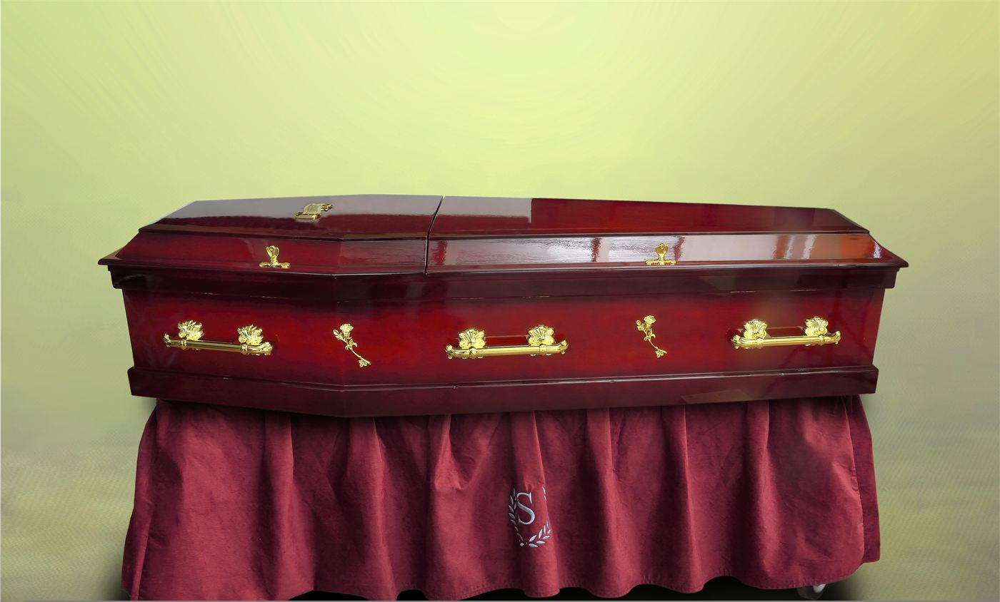
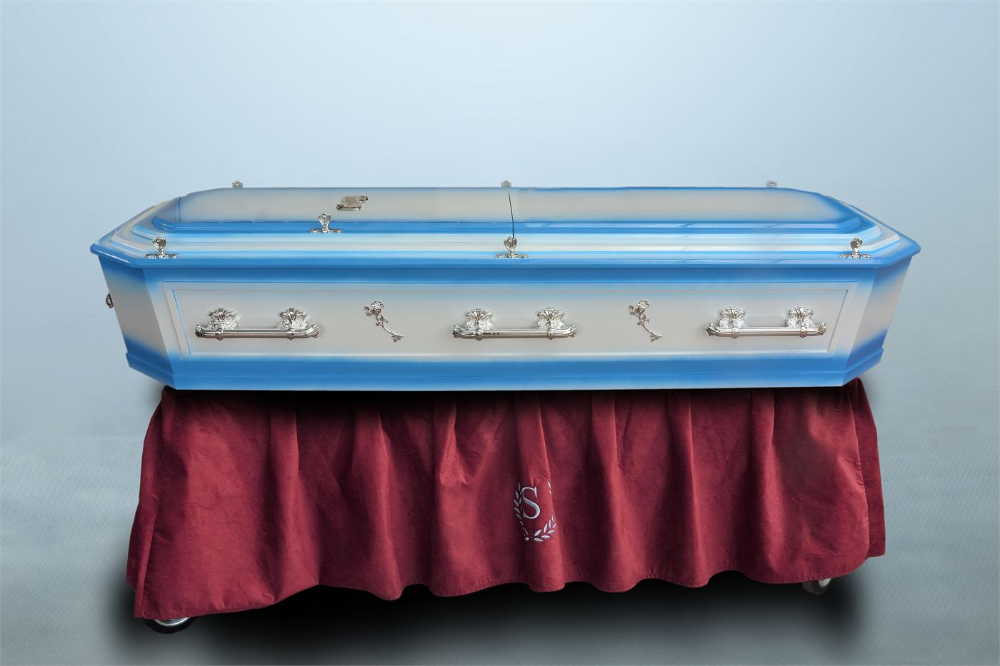
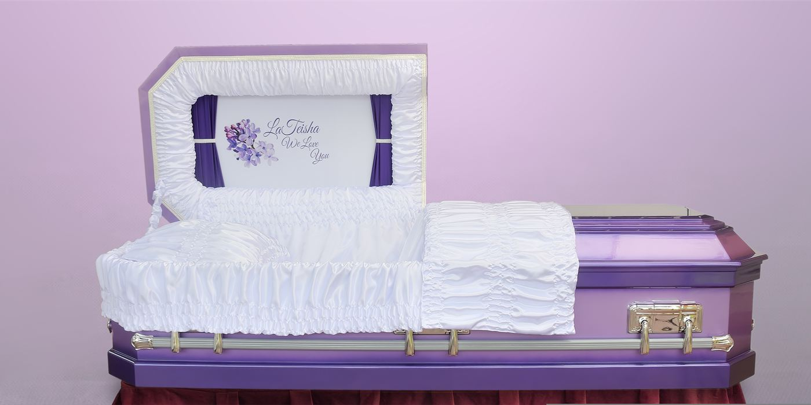
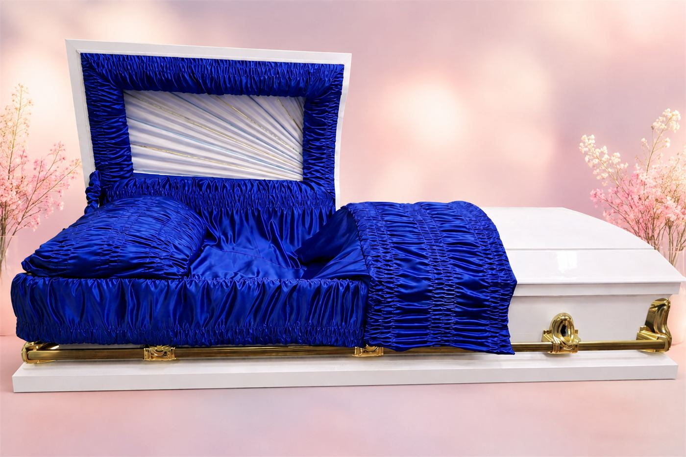
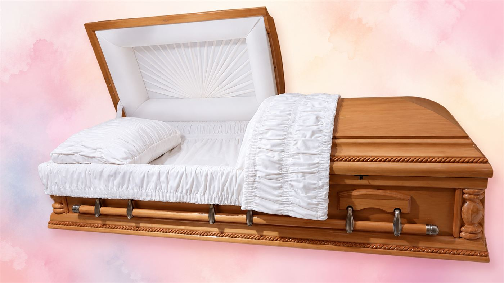

Sterling collectionGardiner Basic Highlighted Coffin
Highlighted two-tone finish · Also shown in cherry finish
Casket Collection
Browse representative styles, then speak with Sterling for guidance on current designs, finishes and availability.

Sterling collectionHighlighted two-tone finish · Also shown in cherry finish

Sterling collectionCherry finish · Also available in white

Sterling collectionOne of the most popular choices in Barbados · Shown in blue and white, and in cherry
Cherry finish · Sunburst interior · Gold-tone hardware

Sterling collectionLilac and purple · Also shown in green and white, and cherry with copper handles

Sterling collectionLocally crafted oval top · Mahogany, white and purple finishes

Sterling collectionImported mahogany · Hand-beaded detailing · Antique brass hardware
Whenever you need us
When you are ready to talk, a caring member of our team is only a call or message away.